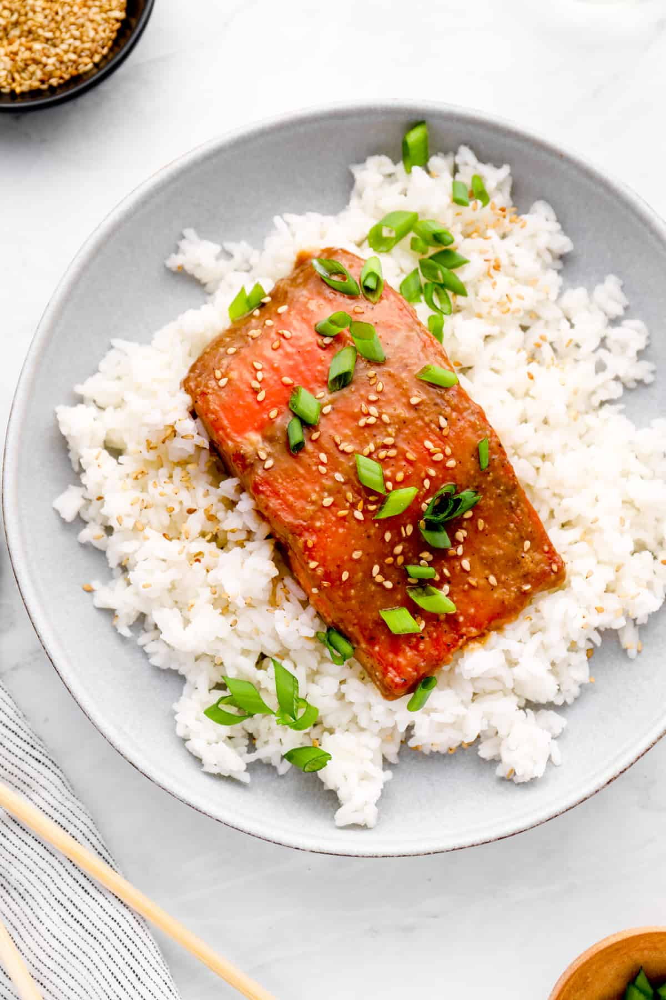

Sockeye Salmon Recipe

Description
This Salmon dish is easy to make and delicious! My favorite part of this dish is how customizeable and creative you can get with the ingredients and sides. I use frozen Sockeye for simplicity, however fresh salmon would be preffered. Shoutout to Mama Rosa and Baba Housh.
Ingredients
- Sockeye Salmon Filets
- Butter
- Salt & Pepper
- Garlic
- Rice
- Scallions
- Lemon
- Sesame seeds
- Your Preffered Sauce, I use Teriyaki for the rice
- Olive oil
- Frozen Veggies
Steps
- Set the oven to 350 degrees
- Boil rice water
- Add a pinch of salt to the rice water, wait for it to boil
- While we wait for Oven and Rice, remove Salmon from packaging and pat dry
- Throw 2tbsp of butter into a microwave safe bowl and microwave for 30 seconds
- Grab container you will cook the salmon in, I used a pyrex oven safe container
- Spray the bottom of the pyrex in oil then place the salmon in the container with the skin down
- Stop here, add the rice, lower the heat to low, and set a timer
- Begin basting the salmon in butter. Try to coat the entire salmon
- Add preffered amount of salt and pepper to the top of the salmon
- Place garlic cloves on top of the salmon
- The salmon is now ready for the oven, it will take 12 minutes, so try to line this up with the rice
- Cook Salmon for 12 minutes
- Cook up some veggies on the stovetop/microwave. I use stir fry veggies and cook them on the stovetop.
- Add the components together and garnish with scallions, lemon, sesame seeds and your preffered sauce as you see fit